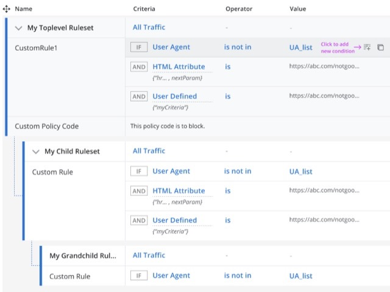
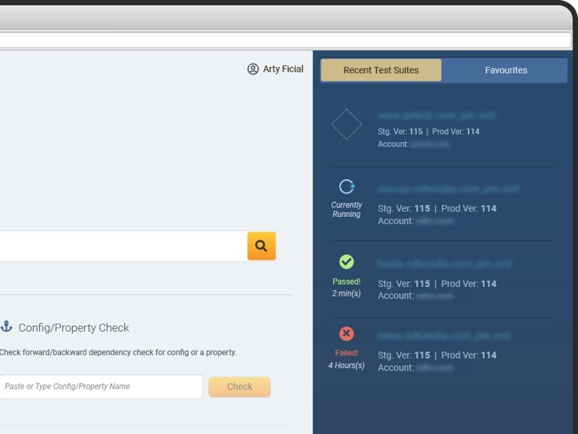
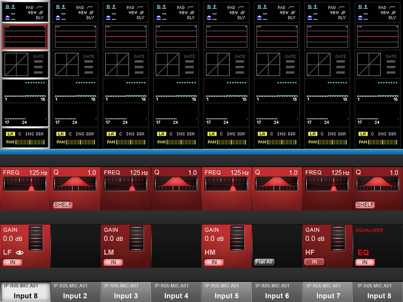
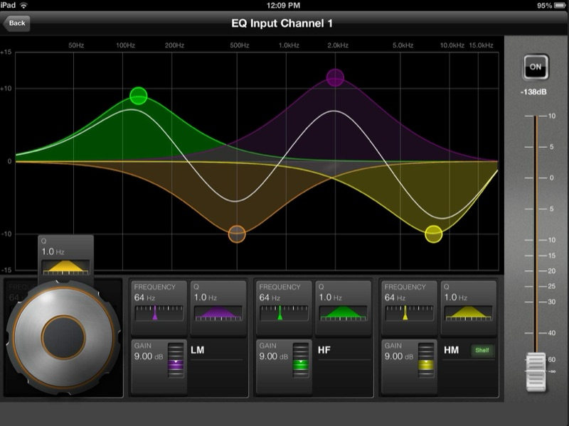
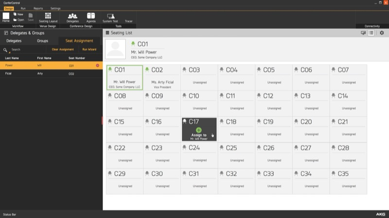

I design complex enterprise products, and increasingly, I build them with AI.
Principal UX DesignerLIQUiDITY, Abu Dhabi
Twenty years of making expert tools usable, from mixing consoles and CDN configuration to cloud security policy. Today I work on private credit, where analysts and investment managers make lending decisions with AI.
Designing AI, building with AI
I design AI for experts making high-stakes decisions, and I build with AI every day, knowing where it shouldn’t have the final say.
Designing AI
- AI chat tool
- A workspace for analysts and investment managers, with skills, projects and a home screen for each role.
- AI assistant
- Contextual help across a lending platform, from origination to monitoring.
- Generative UI
- AI-generated screens built from our own components, so they look and behave like the product.
- Keeping people in the decision
- Check questions the AI asks during reviews, designed with data science, so experts don’t simply accept its output.
Building with AI
- MCP apps
- Built directly with Claude, reading and writing real data, with Figma kept as the review step.
- Design system in sync
- Storybook and the Figma library kept in step through Claude. Every change still goes through engineering review.
- Rules for the AI
- Written into each project so it can’t drift from the foundations or invent components. User flows I still check against research myself.
Selected work
-
“What do I need to focus on today?”
AI chat tool and MCP apps
An AI workspace for investment teams, and the apps that run inside it.
-

Web Security Rule Builder
Legacy on-premise policies moved to a cloud gateway, built as rules in the interface instead of code.
-

Regression Web Testing
Engineers test configuration changes on staging before they reach production.
How I work
Users first, balanced against what the business needs and what engineering can build. When a deadline means setting a principle aside, I say so and note the cost.
I’m self-taught. I started out colouring comics and teaching design tools, and learned UX on the job, shipping enterprise products alongside the PMs and engineers I worked with. Learning that way taught me to pick up a new domain fast, from CDN and cloud security to private credit and AI.
Earlier work
-

Vi3000 console
-

ViSi iPad app
-

Confer Control
Experience
- LIQUiDITY
- 2025 – nowPrincipal UX Designer
- 2022 – 2025Senior UX Designer
- Skyhigh Security
- 2022UX Manager
- 2021 – 2022UX Architect
- Akamai Technologies
- 2014 – 2021Senior UI Engineer
- HARMAN
- 2013 – 2014Senior Product Designer
- Akamai Technologies
- 2010 – 2013Graphic Designer
- Tesco HSC
- 2009 – 2010Graphic Designer
- The New Indian Express
- 2008 – 2009Visualizer
- Image Infotainment
- 2006 – 2008Trainer and Design Faculty
- Virgin Comics
- 2005 – 2006Digital Colouring Artist
From colleagues
“You are an expert in UX and have the ability to listen and transform technical details into high fidelity UX screens and guidance for your engineering counterparts.”
“You are now a pillar of the team.”
Contact
If you’re building something complex, especially with AI, I’d like to hear about it.
- Emailchetanshridhar@gmail.com
- LinkedInlinkedin.com/in/chetanshridhar
- Dribbbledribbble.com/chetanshridhar
- Mediummedium.com/@chetanshridhar
- RésuméDownload PDF
- Based inAbu Dhabi, UAE